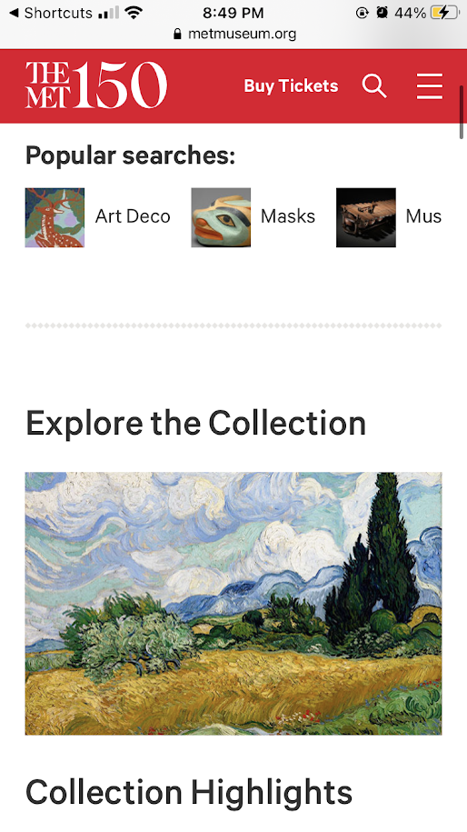

Design Principle:
White Space and Clean Design
Company: Glossier
www.glossier.com
This screenshot of Glossier's website shows a clean white background used to emphasize the images and content of the page. The content uses simple black text and the buttons are centered, all making for a clean and minimalistic design that keeps your focus on the products.
Design Principle:
Rule of Thirds
Company: The Metropolitan Museum of Art
https://www.metmuseum.org/

For this design principle, you can see in the first screenshot that there are three tabs, split evenly into thirds which is more visually appealing then splitting them into 4 tabs which would be too small, or two which would be stale and boring. Dividing the sections into thrids makes the website a little more dynamic and adds visual interest. In the second screenshot theres an image, followed by its title and then some descriptive information about the peice. The three content items are divided vertically into three sections which follows the rule of thrids and make an appealing layout.
Design Principle:
Visual Hierarchy
Company: Vogue
https://www.vogue.com
This screenshot shows visual heirarchy through its use of color, scale and proximity. Immediatly your eye is drawn to the main image and the colorful dress. This makes sense since vogue is a fashion brand and wants to immediatly emphasize that. Second you may either notice the round menu button, due to its proximity to the dress, or the title "Vogue" at the top, whihc has strong contrast and is medium sized. Lastly you will notice the smaller subscribe button, which doesn't immediatley grab the viewers attention as it isn't the most important thing on the screen.